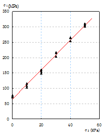
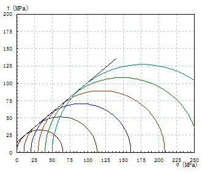
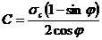
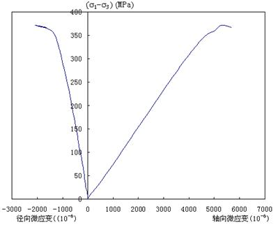
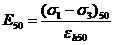

岩石常规三轴实验定义和测定
1、抗压强度σ1
式中：
σ1——不同侧向应力时的抗压强度（MPa）；
P ——轴向破坏载荷峰值（N）；
A ——试样的横截面积（mm2）。
2、根据轴向应力σ1和侧向应力σ3求岩石的内摩擦角φ和粘聚力C
图1 σ1～σ3 最佳关系曲线
图2 莫尔应力圆
（1）以 为纵坐标， 为横坐标绘制 ～ 最佳关系曲线（直线），如图1所示，按下式直接求 ， 值:
式中：
C——岩石的粘聚力（MPa）；
φ——岩石的内摩擦角（度）；
σc —— σ1～σ3 最佳关系曲线纵坐标的应力截距（MPa）；
Κ —— σ1～σ3最佳关系曲线的斜率。
（2）在 ～ 最佳关系曲线（直线）上选定若干组对应的值，在剪应力 与正应力 坐标图上以 为圆心，以 为半径绘制莫尔应力圆（如图2），根据莫尔～库仑强度理论确定三轴应力状态下岩石的抗剪强度参数。
3、绘制应力--应变曲线
（1）用测微表测定变形时，轴向应变按下式计算：
式中：
εh——轴向应变值；
L——试样高度（mm）；
ΔL——试样压缩变形值（mm）；
ΔL1——测定的总变形值（mm）；
ΔL2——三轴压力室构件的变形值（mm）。
（2）用电阻应变仪测定应变时，按下式计算试样的体积应变值
式中：
εv——某一应力下的体积应变值；
εh——某一应力下的纵向应变值；
εd——某一应力下的横向应变值。
（3）绘制应力--应变关系曲线，如图3所示。
图3 三轴抗压强度应力～应变曲线图
（4）根据应力--应变关系曲线，分别计算弹性模量，泊松比:
式中：
E50——弹性模量（MPa）；
(σ1～σ3)50——相当于50%主应力差的应力值（MPa）；
εh50——应力为抗压强度50%时的纵向应变值。
（5）取应力为抗压强度50%时的横向应变值和纵向应变值计算泊松比。
式中：
μ——泊松比；
εd50——应力为主应力差50%时的横向应变值；
εh50——应力为主应力差50%时的纵向应变值。